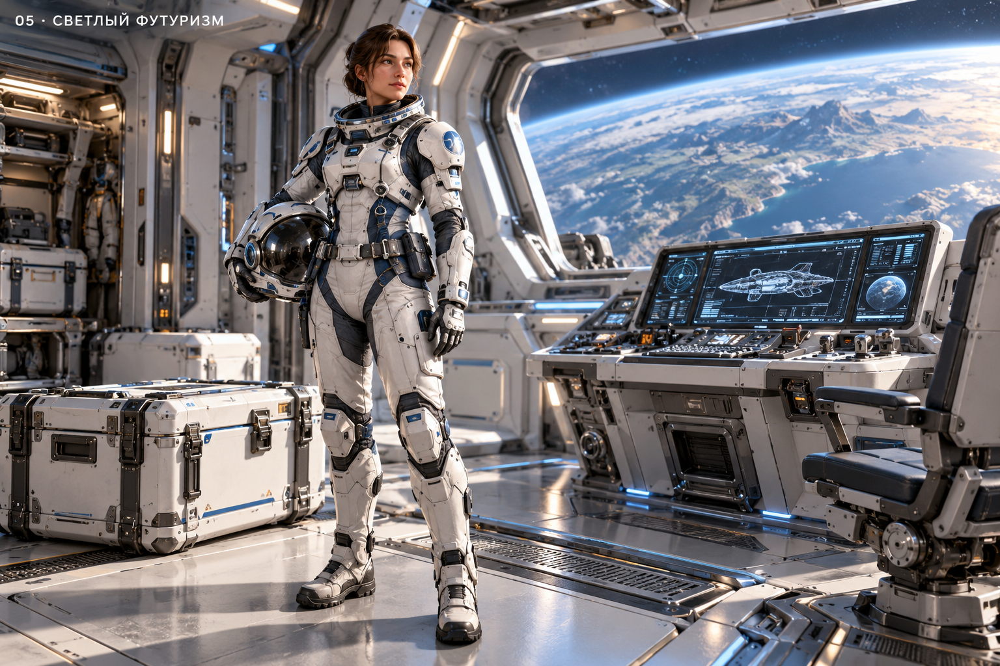
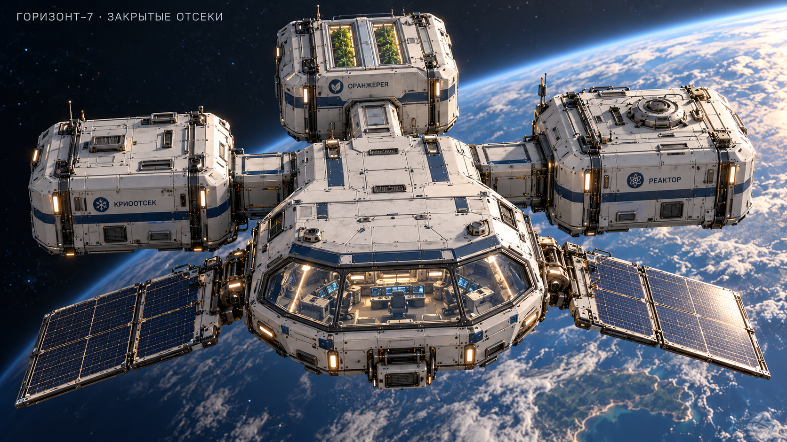
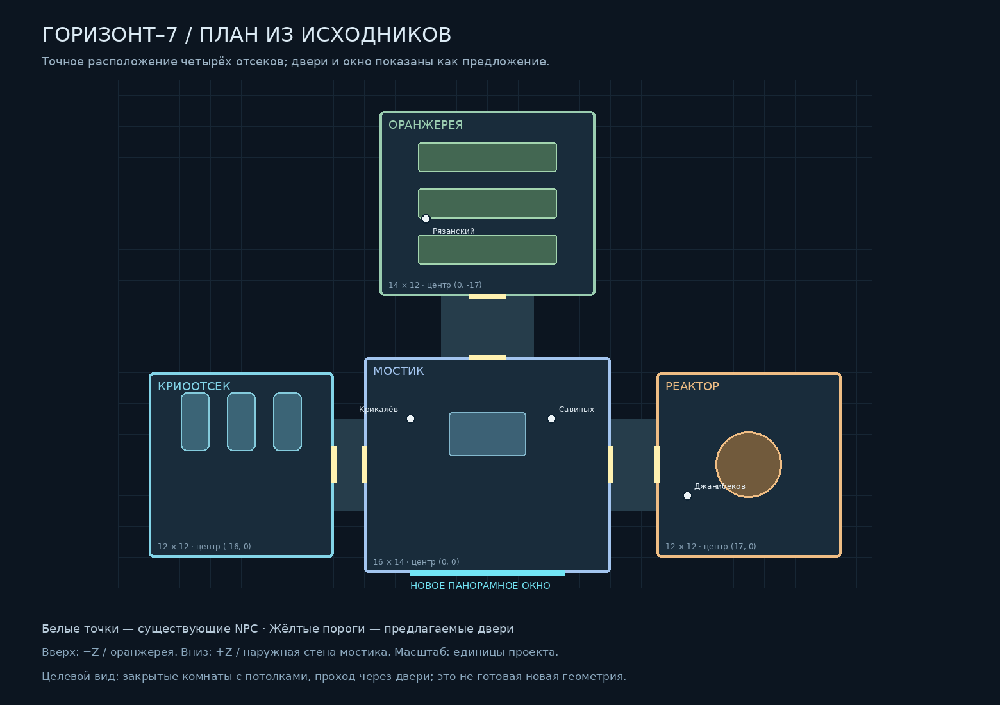

Общий стиль — вариант № 5Светлый футуризм: материалы, цвет и плотность технических деталей.images/00_style_reference.png
Коридоры и двериЗакрытые переходы, силовые рамы, дверные створки и подсветка.images/05_corridors_doors.png
Панорамное окноОбщий вид и детали многослойной рамы; вид на Юпитер и Европу.images/06_panoramic_window.png
Закрытые объёмы корабляДополнительный внешний вид для понимания крыши и связей отсеков.images/07_closed_ship.png
План палубыСхема прежней версии проекта; двери и окно показаны как предложения.layout/08_deck_plan.png